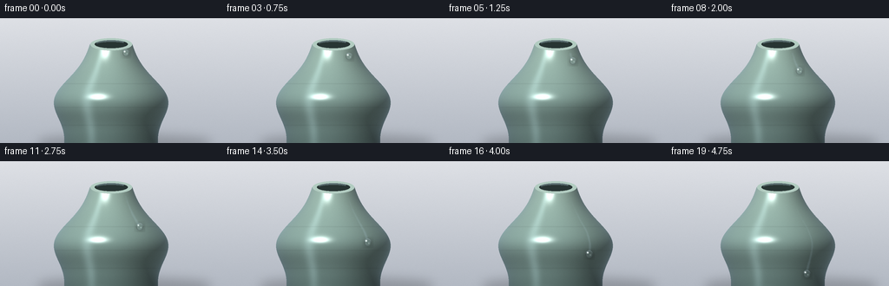
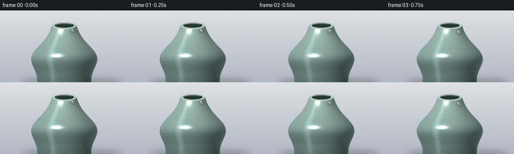

CODING AGENTS AS PIXEL WORLD MODELS
traex/Seed-2.1-Pro-0915 · phygen_039
点击播放 · 原生 RGB 像素
逐轮保存的候选
回放视频、检查图与代码变化。
每份候选均可单独播放。实际图片检查记录在下方工具轨迹中。
候选 01播放与检查图
点击播放 · 原生 RGB 像素


展开代码变化
--- 上一保存版本
+++ 本次保存版本
@@ -0,0 +1,224 @@
+"""Procedural text-to-video render.
+
+Scene: a glistening dewdrop sliding across the smooth glazed surface of a
+ceramic vase. The vase is a shaded surface of revolution; the drop keeps a
+fixed azimuth while gravity carries it down, so its horizontal motion traces
+the contour of the vase (accentuating its shape). Rendered at 3x and
+downsampled for smooth edges and highlights.
+"""
+import numpy as np
+from PIL import Image, ImageDraw, ImageFilter
+
+import artifact_io
+
+# ---------------------------------------------------------------- constants
+W, H = 256, 144
+SS = 3 # supersampling factor
+N = 20
+FPS = 4.0
+CX = 128.0 # vase axis (final px)
+Y_TOP = 30.0 # rim height
+Y_BOT = 144.0
+U_DROP = 0.60 # azimuth of the drop on the body (sin theta)
+rng = np.random.default_rng(7)
+
+
+# ------------------------------------------------------------- vase profile
+def radius(y):
+ """Vase radius (final px) as a function of vertical position."""
+ t = np.clip((y - Y_TOP) / (Y_BOT - Y_TOP), 0.0, 1.0)
+ neck_to_base = 24.0 + 28.0 * t
+ bulge = 26.0 * np.exp(-((t - 0.55) / 0.28) ** 2)
+ return neck_to_base + bulge
+
+
+def drop_path(p):
+ """Drop center for animation phase p in [0,1]; fixed azimuth, gravity."""
+ e = p ** 1.7
+ y = 40.0 + 90.0 * e
+ x = CX + U_DROP * radius(y)
+ return x, y
+
+
+# ------------------------------------------------------------ base scene 3x
+sw, sh = W * SS, H * SS
+xs = (np.arange(sw) + 0.5) / SS
+ys = (np.arange(sh) + 0.5) / SS
+X, Y = np.meshgrid(xs, ys)
+
+# studio backdrop: soft vertical gradient
+top = np.array([0.87, 0.88, 0.90])
+bot = np.array([0.70, 0.725, 0.765])
+gy = np.clip(Y / H, 0, 1)[:, :, None]
+base = (top[None, None] * (1 - gy) + bot[None, None] * gy)
+base = np.broadcast_to(base, (sh, sw, 3)).copy()
+
+# profile + lathe geometry
+r_y = radius(Y)
+dr = radius(Y + 0.5) - radius(Y - 0.5) # dr/dy
+inside = (Y >= Y_TOP) & (np.abs(X - CX) <= r_y)
+
+u = np.clip((X - CX) / np.maximum(r_y, 1e-6), -1, 1)
+sin_t, cos_t = u, np.sqrt(np.clip(1 - u * u, 0, 1))
+inv = 1.0 / np.sqrt(1 + dr * dr)
+nr, ny = inv, -dr * inv
+nx, nz = nr * sin_t, nr * cos_t
+nrm = np.stack([nx, ny, nz], axis=-1)
+
+# light: upper-left, front
+L = np.array([-0.40, -0.60, 0.70])
+L /= np.linalg.norm(L)
+ndl = np.clip(nrm @ L, 0, 1)
+Hh = L + np.array([0.0, 0.0, 1.0])
+Hh /= np.linalg.norm(Hh)
+ndh = np.clip(nrm @ Hh, 0, 1)
+
+t = np.clip((Y - Y_TOP) / (Y_BOT - Y_TOP), 0, 1)
+c_hi = np.array([0.66, 0.775, 0.725])
+c_lo = np.array([0.50, 0.62, 0.60])
+albedo = c_hi[None, None] * (1 - t[..., None]) + c_lo[None, None] * t[..., None]
+
+# faint throwing rings
+ring = np.zeros_like(t)
+for rc in (0.40, 0.64, 0.82):
+ ring += np.exp(-((t - rc) / 0.006) ** 2)
+albedo *= 1 - 0.05 * ring[..., None]
+
+shade = (0.44 + 0.56 * ndl) * (0.82 + 0.18 * cos_t)
+stripe = np.exp(-((u + 0.42) / 0.10) ** 2) * (0.25 + 0.75 * cos_t)
+fres = (1 - cos_t) ** 2
+spec = ndh ** 90 * 0.75
+
+body = albedo * shade[..., None]
+body += stripe[..., None] * np.array([0.10, 0.115, 0.12])
+body += fres[..., None] * np.array([0.16, 0.19, 0.23])
+body += spec[..., None]
+base = np.where(inside[..., None], np.clip(body, 0, 1), base)
+
+# static ceramic grain
+base += rng.normal(0, 0.0045, (sh, sw, 1))
+
+# rim / mouth
+rim = Image.new("L", (sw, sh), 0)
+d = ImageDraw.Draw(rim)
+ry0 = Y_TOP * SS
+d.ellipse([(CX - 24) * SS, ry0 - 7 * SS, (CX + 24) * SS, ry0 + 7 * SS], fill=255)
+mouth = Image.new("L", (sw, sh), 0)
+dm = ImageDraw.Draw(mouth)
+dm.ellipse([(CX - 19) * SS, ry0 - 4.6 * SS, (CX + 19) * SS, ry0 + 4.6 * SS], fill=255)
+rim_a = (np.asarray(rim, dtype=np.float32) / 255)[..., None]
+mouth_a = (np.asarray(mouth, dtype=np.float32) / 255)[..., None]
+base = base * (1 - rim_a) + np.array([0.70, 0.80, 0.76]) * rim_a
+base = base * (1 - mouth_a) + np.array([0.16, 0.21, 0.20]) * mouth_a
+hl = Image.new("L", (sw, sh), 0)
+dh = ImageDraw.Draw(hl)
+dh.arc([(CX - 19) * SS, ry0 - 4.6 * SS, (CX + 19) * SS, ry0 + 4.6 * SS],
+ 205, 320, fill=200, width=2 * SS)
+base = np.clip(base + (np.asarray(hl, dtype=np.float32) / 255)[..., None]
+ * np.array([0.25, 0.28, 0.30]), 0, 1)
+
+# soft cast shadow on the ground
+sh_layer = Image.new("L", (sw, sh), 0)
+ds = ImageDraw.Draw(sh_layer)
+ds.ellipse([(CX - 85) * SS, 134 * SS, (CX + 115) * SS, 150 * SS], fill=90)
+sh_layer = sh_layer.filter(ImageFilter.GaussianBlur(6 * SS))
+base *= 1 - 0.55 * (np.asarray(sh_layer, dtype=np.float32) / 255)[..., None]
+base = np.clip(base, 0, 1)
+
+
+# ------------------------------------------------------------- compositing
+def bilinear(img, px, py):
+ x0 = np.floor(px).astype(np.int32)
+ y0 = np.floor(py).astype(np.int32)
+ fx = px - x0
+ fy = py - y0
+ x0c, y0c = np.clip(x0, 0, sw - 1), np.clip(y0, 0, sh - 1)
+ x1c, y1c = np.clip(x0 + 1, 0, sw - 1), np.clip(y0 + 1, 0, sh - 1)
+ a = img[y0c, x0c]
+ b = img[y0c, x1c]
+ c = img[y1c, x0c]
+ e = img[y1c, x1c]
+ return (a * (1 - fx[..., None]) + b * fx[..., None]) * (1 - fy[..., None]) + \
+ (c * (1 - fx[..., None]) + e * fx[..., None]) * fy[..., None]
+
+
+def smoothstep(a, b, x):
+ q = np.clip((x - a) / (b - a), 0, 1)
+ return q * q * (3 - 2 * q)
+
+
+yy, xx = np.mgrid[0:sh, 0:sw]
+yyf, xxf = yy / SS, xx / SS
+in_vase = (np.abs(xxf - CX) <= radius(yyf) - 1.5)
+
+frames = []
+for fi in range(N):
+ p = fi / (N - 1)
+ dx_c, dy_c = drop_path(p)
+ cx0, cy0 = dx_c * SS, dy_c * SS
+ r0 = (4.0 + 0.5 * p) * SS
+
+ img = base.copy()
+
+ # ---- wet trail behind the drop
+ hist = 0.9
+ nseg = 46
+ trail = Image.new("L", (sw, sh), 0)
+ dt_draw = ImageDraw.Draw(trail)
+ pts = [drop_path(max(0.0, p - hist * j / nseg)) for j in range(nseg + 1)]
+ pts = [(qx * SS, qy * SS) for qx, qy in pts]
+ for j in range(nseg):
+ age = j / nseg # 0 at head, 1 at tail
+ wdt = max(1.0, (3.2 * (1 - age) ** 1.5 + 0.4) * (SS / 3) * 2.2)
+ alpha = int(170 * (1 - age) ** 1.3)
+ dt_draw.line([pts[j], pts[j + 1]], fill=alpha, width=int(wdt))
+ trail = trail.filter(ImageFilter.GaussianBlur(1.4))
+ tm = np.asarray(trail, dtype=np.float32) / 255
+ tm *= in_vase & (yyf <= dy_c + 0.5)
+ img = img * (1 - 0.10 * tm[..., None]) + np.array([0.12, 0.14, 0.16]) * tm[..., None]
+
+ # ---- drop localized patch
+ rad = int(r0 + 7 * SS / 3)
+ xlo, xhi = max(0, int(cx0) - rad), min(sw, int(cx0) + rad + 1)
+ ylo, yhi = max(0, int(cy0) - rad), min(sh, int(cy0) + rad + 1)
+ ly, lx = np.mgrid[ylo:yhi, xlo:xhi]
+ ddx = (lx - cx0) / r0
+ ddy = (ly - cy0) / r0
+ rho = np.sqrt(ddx * ddx + ddy * ddy)
+ cov = 1 - smoothstep(0.92, 1.02, rho)
+
+ patch = img[ylo:yhi, xlo:xhi].copy()
+
+ # contact shadow
+ sh_d = np.exp(-(((ddx - 0.18) / 1.35) ** 2 + ((ddy - 0.28) / 1.35) ** 2))
+ patch *= 1 - 0.16 * sh_d[..., None]
+
+ # lens: magnified view of the ceramic beneath
+ qx = np.clip(cx0 + ddx * r0 * 0.40, 0, sw - 1)
+ qy = np.clip(cy0 + ddy * r0 * 0.40, 0, sh - 1)
+ seen = bilinear(base, qx, qy)
+ lens = seen * 0.93 + np.array([0.70, 0.80, 0.85]) * 0.07
+ lens *= 1 - 0.30 * smoothstep(0.62, 0.98, rho)[..., None]
+ patch = patch * (1 - cov[..., None]) + lens * cov[..., None]
+
+ # bright top rim crescent and faint bottom caustic crescent
+ cres_top = cov * smoothstep(0.68, 0.98, rho) * np.clip(-ddy, 0, 1)
+ cres_bot = cov * smoothstep(0.55, 0.92, rho) * np.clip(ddy, 0, 1)
+ patch += cres_top[..., None] * np.array([0.55, 0.60, 0.66]) * 0.55
+ patch += cres_bot[..., None] * np.array([0.45, 0.55, 0.60]) * 0.10
+
+ # specular glints with a gentle twinkle
+ tw = 0.85 + 0.25 * np.sin(2 * np.pi * p * 1.3 + 0.7)
+ g1 = np.exp(-(((ddx + 0.38) / 0.20) ** 2 + ((ddy + 0.42) / 0.20) ** 2))
+ g2 = np.exp(-(((ddx - 0.30) / 0.12) ** 2 + ((ddy - 0.18) / 0.12) ** 2))
+ patch += (g1 * tw * 0.95 + g2 * 0.30)[..., None]
+
+ img[ylo:yhi, xlo:xhi] = np.clip(patch, 0, 1)
+
+ frame_img = Image.fromarray((img * 255).astype(np.uint8))
+ frame_img = frame_img.resize((W, H), Image.Resampling.LANCZOS)
+ frames.append(np.asarray(frame_img, dtype=np.uint8))
+
+frames = np.stack(frames)
+artifact_io.save(frames, ".")
+print("saved", frames.shape, frames.dtype)
可观测工具轨迹
实际执行的命令与返回图片。
命令 1exit 0
/bin/bash -lc 'cat prompt.txt; echo "---"; cat GENERATION_RULES.md; echo "---"; cat task_spec.json'
命令 2exit 0
/bin/bash -lc 'ls -la; find . -name "artifact_io*" 2>/dev/null; python3 -c "import artifact_io; print(artifact_io.__file__)" 2>&1 | head -5'
命令 3exit 0
/bin/bash -lc 'cat artifact_io.py'
命令 4exit 0
/bin/bash -lc 'cd . && time python3 generate.py && ls -la'
视觉工具实际返回图片 1

保存候选 1 份；完成命令 4 次；可验证图片返回 1 张。原始 API 响应与完整日志保留在本地。